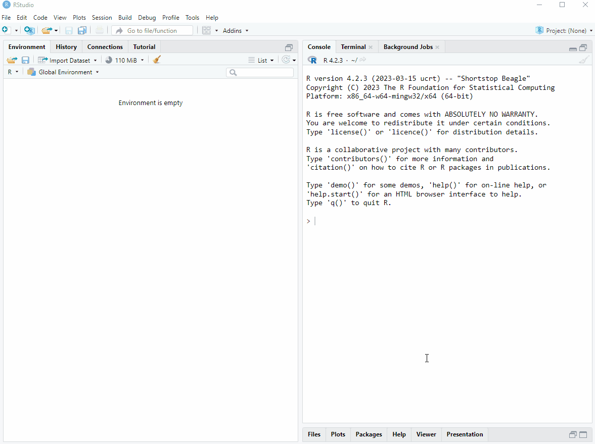
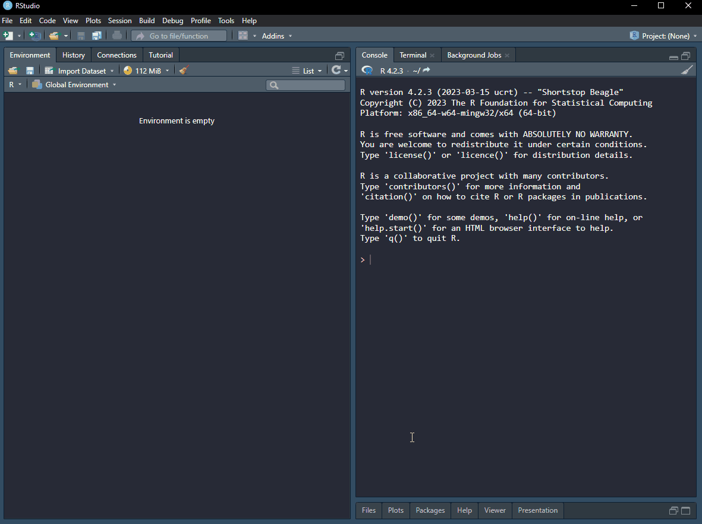
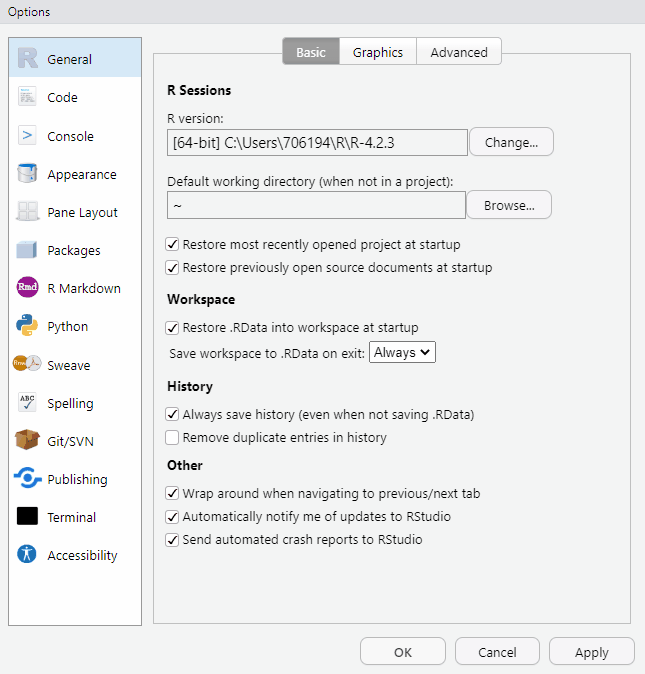
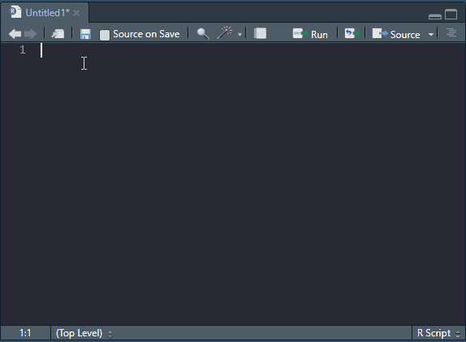
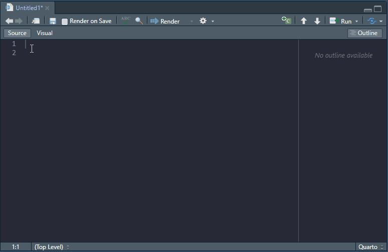

a <- c(1, 2, 3, 4)
plot(a)4 Getting to know R and RStudio
In Chapter 2, we went through all the trouble of installing and setting up the tools needed to become data scientists. It is now assumed that everything was indeed installed and working. In this chapter we will introduce the usage of R and Rstudio. First we will set up and customize RStudio and then learn how to communicate with R.
4.1 The Anatomy of RStudio
The appearance of RStudio can be changed for a more pleasant user experience. I like a dark theme as it is easier on the eye. We can also move the different components of RStudio. I like to have The console on the top right and the source on the top left. I think this makes it easier to see output when coding interactively.
All this will be clearer as thing evolve, but for now, start R Studio, go to Tools > Global options and make it personal (see Figure 4.1)!

As you may have spotted in the image above, it is possible to change the font of your editor. I like Fira code.
Defining concepts
Source editor: Is where scripts are edited.
Environment: In R, the environment is where data variables and structures are saved during execution of code.
Script: Your script is the document containing your computer code. This is your computer program (using a loose definition of a software program).
Variables: In R, variables are containers for data values.
Workspace: This is your environments as represented on your computer. A workspace can be, but should not be saved between sessions.
4.1.1 The source editor
The source editor is where you edit your code. When writing your code in a text-file, you can call it a script, this is essentially a computer program where you tell R what to do. It is executed from top to bottom. You can send one line of code, multiple lines or whole sections into R. In the image below (Figure 4.2), the source window is in the top left corner.
4.1.2 Environment
The environment is where all your objects are located. Objects can be variables or data sets that you are working with. In RStudio the environment is listed under the environment tab (bottom left in the image).
Copy the code below to a R script. To run it line by line, set your cursor on the first line a press Ctrl+Enter.What happened in your environment? Press Ctrl+Enter again and you will see a plot in the plot window. Amazing stuff!
4.1.3 The console
By pressing Ctrl+Enter from the script, as described above, you sent your code to the console. You can also interact with R directly here. By writing a in the console and hitting enter you will get the value from the object called a. This means that it is also where output from R is usually printed. In the image below, the console is in the top right corner.
4.1.4 Files, plots, packages and help files
In RStudio files are accessible from the Files tab. The files tab shows the files in you root folder. The root folder is where R will search for files if you tell it to. We will talk more about the root folder later in connection with projects. Plots are displayed in the Plot tab. Packages are listed in the packages tab. If you access the help files, these will be displayed in the help tab. In the image below all these tabs are in the bottom right corner. More on help files and packages later.

4.2 Reproducible data science using RStudio
When starting to work more systematically in RStudio we will set some rules that will allow for reproducible programming. Remember from Chapter 2 that part of a fully reproducible study is software/code that produces the results. It turns out that when working interactively with R you can fool yourself to belive that you have included all steps needed to produce some results in your script. However, variables may be stored in your environment but not by assigning values to them in your script. This will become a problem if you want to share your code, a certain value/variable needed to make the program work may be missing from your script.
To avoid making such a mistake it is good practice not to save variables in your environment between sessions, everything should be scripted and documented and assumed not defined elsewhere. In RStudio we can make an explicit setting Not to save the workspace (See Figure 4.3).

4.3 Basics R programming, Installing and using swirl
Swirl is a great way to get to know how to talk with R. Swirl consists of lessons created for different topics. Install swirl by typing the following into your console:
install.packages("swirl")When swirlis installed you will need to load the package This means that all functions that are included in package becomes available to you in your R session. To load the package you use the library function.
library("swirl")When you run the above command in your console you will get a message saying to call swirl() when you are ready to learn. I would like you to run the course “R Programming: The basics of programming in R”. Swirl will ask if you want to install it. After installation, just follow the instructions in the console. To get out of swirl, just press ESC.
4.4 File formats for editing and executiong R code
4.4.1 R scripts
RStudio has capabilities to highlight code for multiple languages. We will focus on R. The most basic file format for R code is an R script, as we have already touched upon. An R script contains code and comments. Code is executed by R and comments are ignored. Ideally, R scripts are commented to improve readability of what the do. Commenting code is also a good way of creating a roadmap of what you want to do. In the image below (Figure 4.4), R code is written based on a plan written with comments. Note that when a line starts with at least one # it is interpreted by R as a comment.

Try the code for yourself to see what it produces. The details will be covered later.
## Create two vectors of random numbers
x <- rnorm(10, 0, 1)
y <- rnorm(10, 10, 10)
## Create an x-y plot of the two vectors
plot(x, y)4.4.2 R markdown and quarto files
The more advanced file formats for R are RMarkdown (.rmd) and quarto (.qmd) files. These have the capabilities of combining formatted text with computer code. The source document may contain multiple pieces of code organized in code chunks together with text formatted with markdown syntax. A meta data field in the top of the source file specifies settings for the conversion to output formats. Multiple output formats are available, including HTML, word and PDF. The image below shows the basic outline of a very simple quarto file destined to create a HTML document.
Notice also that RStudio offers an visual editor where the output is approximated and formatting is available from a menu.
Adding headlines and makes it possible to navigate the document through the outline or the list of components in the bottom of the document.

R markdown and quarto have many similarities as the basic organization is similar between the two. The text parts are written using a special syntax, markdown. The point of markdown is that you will use the same syntax that is later possible to convert to multiple formats. The syntax let’s you do all formatting explicitly, for example instead of getting your mouse to superscript some text you can add syntax a^2^ to achieve a2.
A full guide to RMarkdown can be found on the official R markdown web pages. I suggest you take the time to get an overview of this language as it will make you more fluent in the tools that enables reproducible computing. When writing R markdown, it is handy to have a cheat sheet close by when writing, here is an example for Rmarkdown, and here is another one for quarto 1.
4.4.2.1 Microsoft Word intergration in R Markdown and Quarto
Sometimes it is useful to “knit” to a word file. For example when you want to share a report with fellow students who are not familiar with R. R Markdown/Quarto can be used as a source for word documents (.docx).
To create a word document from your Rmd-file/qmd-file you need a working installation of Microsoft Word. Settings for the output is specified in the YAML metadata field in the Rmd-file. This is the first section of a Rmd file, and when you want it to create a word file you specify it like this:
---
title: "A title"
author: Daniel Hammarström
date: 2020-09-05
output: word_document
---The output: word_document (or format: docx when using quarto) tells R to create a word file. If you are not happy with the style of the word document (e.g. size and font of text) you can tell R to use a template file. Save a word file that you have knitted as reference.docx and use specify in the YAML field that you will use this as reference. See here for the equivalent formatting of quarto documents
---
title: "A title"
author: Daniel Hammarström
date: 2020-09-05
output:
word_document:
reference_docx: reference.docx
---Edit styles (Stiler in Norwegian) used in the reference file (right click on the style and edit). For example, editing the “Title” style (Tittel in Norwegian) will change the main titel of the document. After you have edited the document, save it.
When you knit the document again, your updated styles will be used your word document.
Here you can read more about using R Markdown together with word. If you do not have word installed, you can also use Open Office. Read more about it here.
4.4.2.2 Adding references to R Markdown and Quarto files
References/citations can be added to the report using the bibliography option in the YAML field. Citations needs to be listed in a file, multiple formats are availiable. A convenient format is bibtex. When using this format, create a text file with the ending .bib, for example, bibliography.bib.
The bibliography.bib-file needs to be activated in the YAML-field. Do it by adding this information:
---
title: "A title"
author: Daniel Hammarström
date: 2020-09-05
output:
word_document:
reference_docx: reference.docx
bibliography: bibliography.bib
---Add citations to the file in bibtex-format. Here is an example:
@Article{refID1,
Author="Ellefsen, S. and Hammarstrom, D. and Strand, T. A. and Zacharoff, E. and Whist, J. E. and Rauk, I. and Nygaard, H. and Vegge, G. and Hanestadhaugen, M. and Wernbom, M. and Cumming, K. T. and Rønning, R. and Raastad, T. and Rønnestad, B. R. ",
Title="{Blood flow-restricted strength training displays high functional and biological efficacy in women: a within-subject comparison with high-load strength training}",
Journal="Am. J. Physiol. Regul. Integr. Comp. Physiol.",
Year="2015",
Volume="309",
Number="7",
Pages="R767--779",
Month="Oct"}The part that says refID1 can be edited to something appropriate. This is a reference identification, you use it to get the citation into the text. When citing you do it in the form
Blood flow-restricted training leads to similar adaptations as traditional training [@refID1].This will appear in text as:
Blood flow-restricted training leads to similar adaptations as traditional training (Ellefsen et al. 2015).
The reference will end up in the end of the document (as on this webpage).
You can gather references in bibtex format from Oria (use the BIBTEX icon) and from PubMed using TeXMed. You can also export reference in bibtex format from citation software like Endnote or Zotero. Make sure you check all references when entering them, especially MedTex gives some problems with “scandinavian” letters (å æ ä ø ö).
Recently RStudio added support for adding citations inside the visual markdown editor.
4.5 Packages
The R ecosystem consists of packages. These are functions organized in a systematic manner. Functions are created to perform a specialized task. And packages often have many function used to do e.g. analyses of a specific kind of data, or more general task such as making figures or handle data.
In this course we will use many different packages, for example dplyr, tidyr and ggplot2. dplyr and tidyr are packages used to transform and clean data. ggplot2 is used for making figures.
To install a package, you use the install.packages() function. You only need to do this once on your computer (unless you re-install R). You can write the following code in your console to install dplyr.
install.packages("dplyr")Alternatively, click “Packages” and “Install” and search for the package you want to install. To use a package, you have to load it into your environment. Use the library() function to load a package.
library("dplyr")4.6 References and footnotes
Ellefsen, S., D. Hammarstrom, T. A. Strand, E. Zacharoff, J. E. Whist, I. Rauk, H. Nygaard, et al. 2015. “Blood flow-restricted strength training displays high functional and biological efficacy in women: a within-subject comparison with high-load strength training.” Am. J. Physiol. Regul. Integr. Comp. Physiol. 309 (7): R767–779.
Cheat sheets are available in R Studio: Help > Cheatsheets↩︎